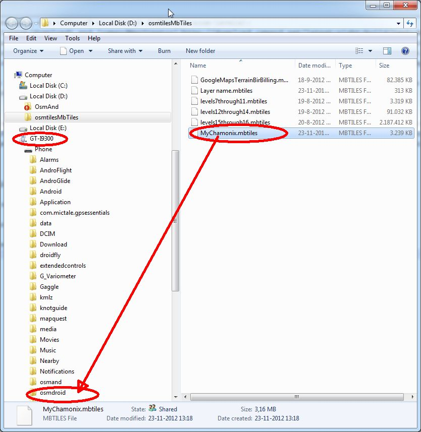
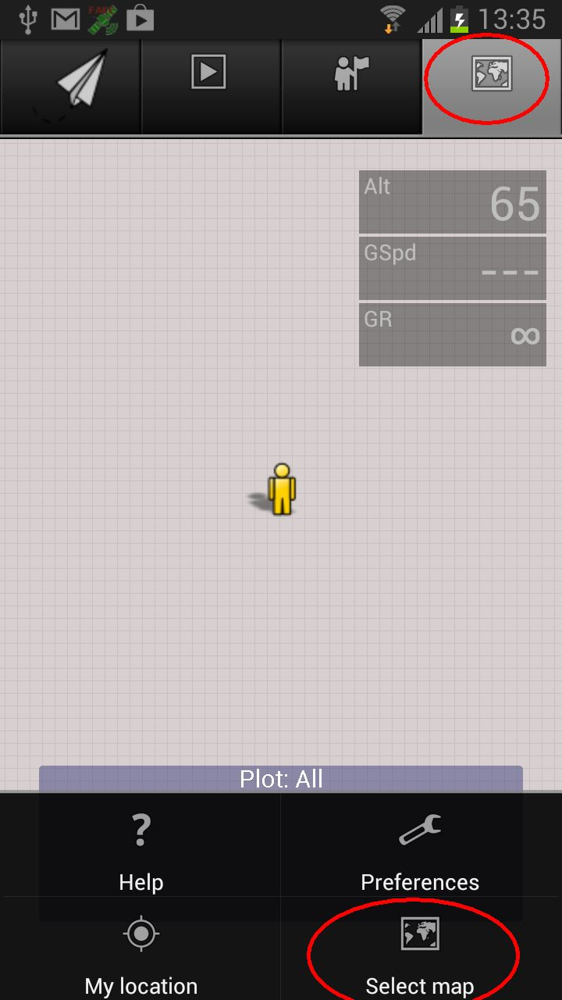
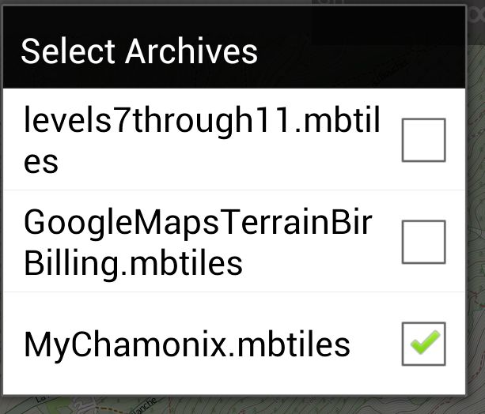

Most maps on the internet an mobile devices can be zoomed in like the well known Google Maps. At each zoom level the map you see consists of a number of 'tiles' (small square bitmap areas/files) that are each downloaded separately from a server. At each zoomlevel and more detailed set of tile-bitmaps is downloaded from the server. Sometimes on a slow connection you can see the map being built up from these tiles. For some applications, like Gaggle, it can be beneficial not to have to download these tiles, because there's no internet connection in flight, because the internet connection is expensive abroad, or because the internet connection drains the battery of the mobile device. For that we have tile-archive: a file containing the tiles of a specific area on the planet at several zoomlevels. An mb-tile-archive is an sqlite database-files with an extension .mbtiles that contains the bitmap tiles for an area
On On this site you can find the following resources for dealing with archives:
Gaggle (beta) can deal with mutiple archives with no problems. They just have to be put in a directory called 'osmdroid' on your android phone's sd-card:
and then they can be selected from within Gaggle (beta):
 